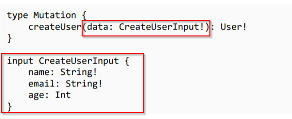

until now we kept the paramets value for a schema inside the ( ) like this
customArray(query:String):[User!]!
How ever with input types we difine a new object of type inpur and pass it's value to the shcema like so

Now in the resolver methods all the feilds can be access by using ...args.data